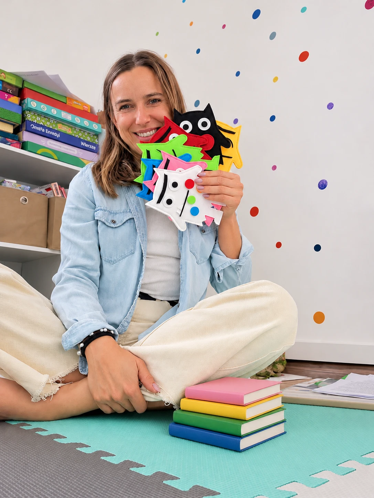
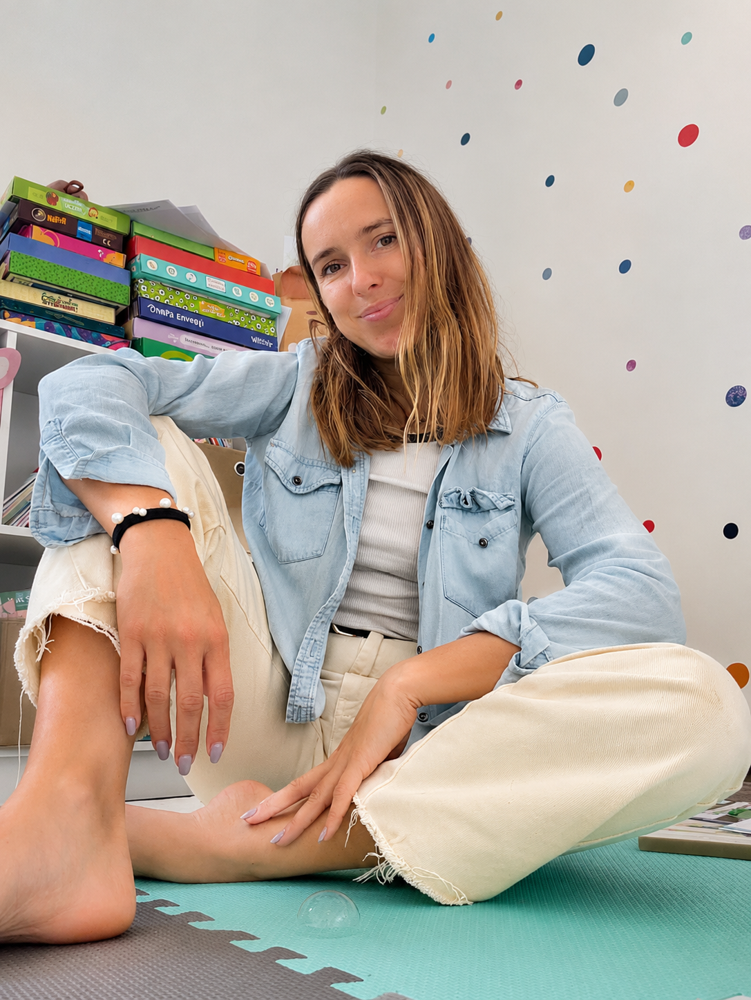
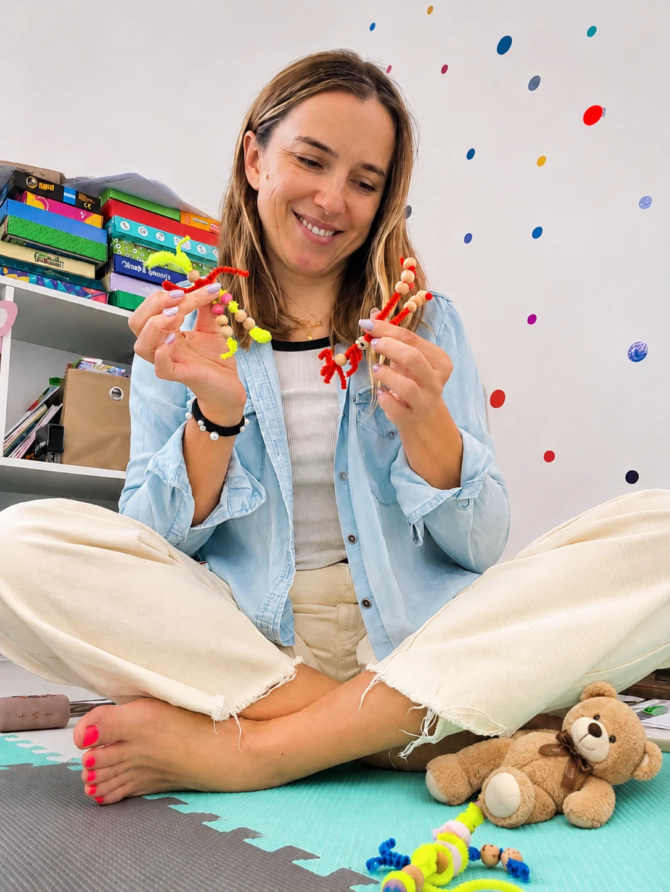
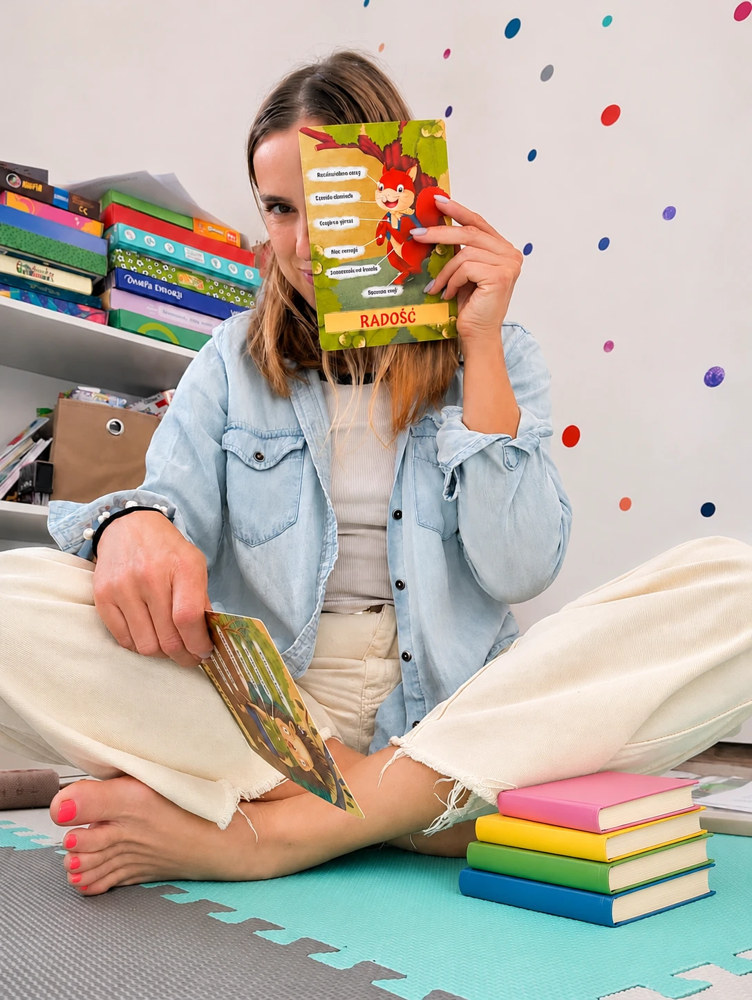
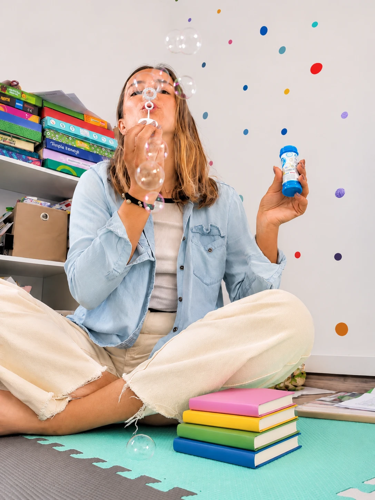
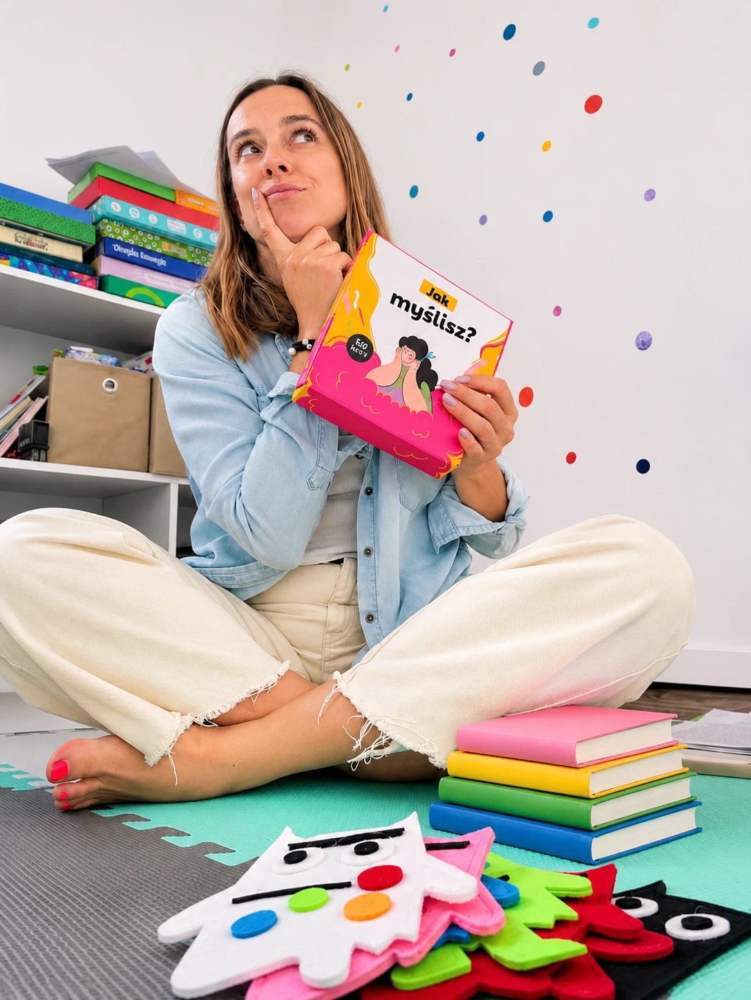

4–5–6 lat
Rozpoznawanie emocji, radzenie sobie z przegraną, pierwsze zasady i dzielenie się w grupie.
Pani od emocji
Trening Umiejętności Społecznych
Trening Umiejętności Społecznych (TUS) w Dobrym Mieście: granice, radzenie sobie z emocjami i budowanie relacji rówieśniczych w bezpiecznej grupie. Bez zmieniania osobowości dziecka.

Przejdź do:
W domu potrafi odmówić, ale w klasie zamiera, gdy ktoś zabiera mu rzeczy albo przekracza granice.
Po fakcie doskonale wie, jak należało postąpić, ale w chwili silnego napięcia emocje biorą górę.
Chce mieć kolegów, ale proste „idź się pobaw" jest dla niego zbyt trudnym krokiem.

O mnie
Jestem trenerką TUS, studentką psychologii i wieloletnim pedagogiem. Prowadzę zajęcia Treningu Umiejętności Społecznych dla dzieci i młodzieży w Dobrym Mieście. Pracuję w małych grupach, przez zabawę, ruch i rozmowę, w stałym kontakcie z rodzicami.
„Dziecko, które coś przećwiczyło, sięga po to w trudnej chwili.”
Nie jest to pogadanka w ławkach. Dzieci tworzą, ruszają się i ćwiczą sytuacje, które znają z podwórka i szkolnego korytarza.




Każde ćwiczenie ma swoje miejsce w procesie. Nic nie robię przypadkowo.
Krok 1
Co mówi ciało? Ścisk w brzuchu, zaciśnięte pięści.
Krok 2
Jaka to emocja i jaka potrzeba kryje się pod nią?
Krok 3
Oddech i bezpieczne rozładowanie napięcia.
Krok 4
Odgrywam reakcję w grupie: „nie podoba mi się to".
Krok 5
Przenoszę umiejętność do szkoły i domu.
Wybierz etap, który odpowiada Twojemu dziecku.
4–5–6 lat
Rozpoznawanie emocji, radzenie sobie z przegraną, pierwsze zasady i dzielenie się w grupie.
6–7–8 lat
Rozwiązywanie konfliktów bez krzyku, wspólna zabawa według zasad.
8–9–10 lat
Obrona własnych granic, odwaga do podniesienia ręki w klasie.
10–11–12 lat
Współpraca w grupie, radzenie sobie z porażką i presją rówieśników.
13–14 lat
Asertywność, komunikacja i relacje z rówieśnikami.
15–16 lat
Odporność na presję rówieśniczą i stres.
17–18 lat
Samodzielność, podejmowanie decyzji i radzenie sobie z oceną innych.
Nie tylko TUS
Prowadzę też zajęcia, w których dzieci uczą się przez konstruowanie, ruch i wspólne tworzenie. Umiejętności społeczne ćwiczymy wtedy przy okazji, w naturalnej zabawie.
Praktyczna matematyka z klockami LEGO. Pomagamy zobaczyć matematykę: dzieci budują, liczą, porównują i odkrywają zależności przez działanie. Prowadzę też tematyczne zajęcia z LEGO.
Grupy LEGOmatyki
5–6 lat
7–10 lat
11–14 lat
Dni pełne zabawy, ruchu i nowych znajomości w czasie ferii i wakacji.
Jednorazowe spotkania tematyczne dla dzieci, np. o emocjach, współpracy czy radzeniu sobie ze złością.
Zadzwoń lub napisz, a odpowiem na wszystkie pytania.
Nie. TUS to wsparcie dla dzieci, które chcą lepiej radzić sobie w grupie. Umiejętności społeczne przydają się każdemu dziecku.
Nie ma presji. Dziecko może zacząć od obserwacji i dołączać do ćwiczeń we własnym tempie.
Według wieku, dojrzałości i indywidualnych potrzeb dziecka. Przed zapisem rozmawiam z rodzicem.
Dwa razy w roku odbywa się spotkanie ewaluacyjne, na którym omawiam postępy i kolejne kroki.
Zajęcia odbywają się w Dobrym Mieście, przy ul. Wojska Polskiego 20B. Zapraszam też dzieci z okolicznych miejscowości.
Tak. Rodzice wiedzą, nad czym pracujemy i jak wspierać dziecko w domu. Po pierwszym półroczu odbywają się spotkania ewaluacyjne, na których omawiamy postępy.
Umów wstępną rozmowę bez zobowiązań. Porozmawiamy o tym, z czym mierzy się Twoje dziecko, i czy TUS będzie dla niego dobrym kierunkiem.
Adres: ul. Wojska Polskiego 20B, 11-040 Dobre Miasto
E-mail: ffrackiewicz4444@gmail.com
Telefon: 603 295 209
Social media
Zajrzyj na zajęcia w mediach społecznościowych
Pokazuję tam prawdziwą codzienność z zajęć i opowiadam, jak wspierać dzieci w emocjach i relacjach.